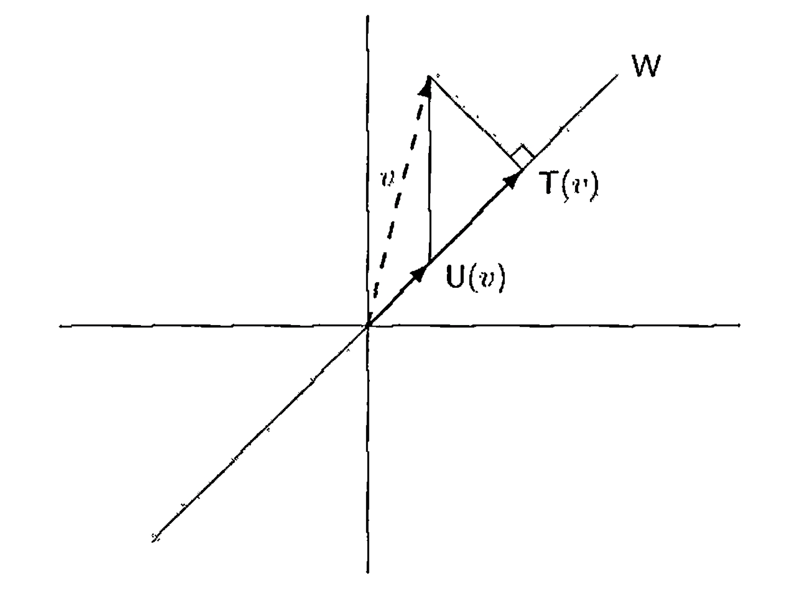

§ 32. Orthogonal Projections and the Spectral Theorem¶
Orthogonal Projections¶
Concept 32.1 : Projection
Recall from Definition 8.19 that if \(V=W_{1} \oplus W_{2}\), then a linear operator \(T\) on \(V\) is the projection on \(W_{1}\) along \(W_{2}\) if, whenever \(x=x_{1}+x_{2}\) with \(x_{1} \in W_{1}\) and \(x_{2} \in W_{2}\), we have \(T(x)=x_{1}\). By Exercise 8.26, we have
So \(V=R(T) \oplus N(T)\). Thus there is no ambiguity if we refer to \(T\) as a "projection on \(W_{1}\)" or simply as a "projection." In fact, by Exercise 10.17, it can be seen that \(T\) is a projection if and only if \(T=T^{2}\).
Because \(V=W_{1} \oplus W_{2}=W_{1} \oplus W_{3}\) does not imply that \(W_{2}=W_{3}\), we see that \(W_{1}\) does not uniquely determine \(T\). For an orthogonal projection \(T\), however, \(T\) is uniquely determined by its range.
Definition 32.2 : Orthogonal Projection
Let \(V\) be an inner product space, and let \(T: V \rightarrow V\) be a projection. We say that \(T\) is an orthogonal projection if \(R(T)^{\perp}=N(T)\) and \(N(T)^{\perp}=R(T)\).
Note that by Exercise 28.13(c), if \(V\) is finite-dimensional, we need only assume that one of the preceding conditions holds. For example, if \(R(T)^{\perp}=N(T)\), then \(R(T)=R(T)^{\perp \perp}=N(T)^{\perp}\).
Theorem 32.3 : Uniqueness of orthogonal projection on a subspace
Assume that \(W\) is a finite-dimensional subspace of an inner product space \(V\). In the notation of Theorem 28.17, define a function \(T: V \rightarrow V\) by \(T(y)=u\).
\(T\) is an orthogonal projection on \(W\), and there exists exactly one orthogonal projection on \(W\). We call \(T\) the orthogonal projection of \(V\) on \(W\).
Proof
It is easy to show that \(T\) is an orthogonal projection on \(W\).
Suppose that \(T\) and \(U\) are orthogonal projections on \(W\). Then \(R(T)=W=R(U)\). Hence \(N(T)=R(T)^{\perp}=R(U)^{\perp}=N(U)\). Since every projection is uniquely determined by its range and null space, we have \(T=U\).
Example 32.4 : Geometric difference between projection and orthogonal projection.
To understand the geometric difference between an arbitrary projection on \(W\) and the orthogonal projection on \(W\), let \(V=\mathbb{R}^{2}\) and \(W=\operatorname{span}\{(1,1)\}\). Define \(U\) and \(T\) as in Figure 32.1, where \(T(v)\) is the foot of a perpendicular from \(v\) on the line \(y=x\) and \(U\left(a_{1}, a_{2}\right)=\left(a_{1}, a_{1}\right)\). Then \(T\) is the orthogonal projection of \(V\) on \(W\), and \(U\) is a different projection on \(W\). Note that \(v-T(v) \in W^{\perp}\), whereas \(v-U(v) \notin W^{\perp}\).

Figure 32.1.
From Figure 32.1, we see that \(T(v)\) is the "best approximation in \(W\) to \(v\)"; that is, if \(w \in W\), then \(\|w-v\| \geq\|T(v)-v\|\). In fact, this approximation property characterizes \(T\). These results follow immediately from the corollary to Theorem 28.17.
Example 32.5 : Fourier approximation via orthogonal projection
As an application to Fourier analysis, recall the inner product space \(H\) and the orthonormal set \(S\) in Example 27.18. Define a trigonometric polynomial of degree \(n\) to be a function \(g \in H\) of the form
where \(a_{n}\) or \(a_{-n}\) is nonzero.
Let \(f \in H\). We show that the best approximation to \(f\) by a trigonometric polynomial of degree less than or equal to \(n\) is the trigonometric polynomial whose coefficients are the Fourier coefficients of \(f\) relative to the orthonormal set \(S\). For this result, let \(W=\operatorname{span}\left(\left\{f_{j}:|j| \leq n\right\}\right)\), and let \(T\) be the orthogonal projection of \(H\) on \(W\). The corollary to Theorem 28.17 tells us that the best approximation to \(f\) by a function in \(W\) is
Theorem 32.6 : Algebraic characterization of orthogonal projections
Let \(V\) be an inner product space, and let \(T\) be a linear operator on \(V\). Then \(T\) is an orthogonal projection if and only if \(T\) has an adjoint \(T^{*}\) and \(T^{2}=T=T^{*}\).
Proof
Suppose that \(T\) is an orthogonal projection. Since \(T^{2}=T\) because \(T\) is a projection, we need only show that \(T^{*}\) exists and \(T=T^{*}\). Now \(V=R(T) \oplus N(T)\) and \(R(T)^{\perp}=N(T)\). Let \(x, y \in V\). Then we can write \(x=x_{1}+x_{2}\) and \(y=y_{1}+y_{2}\), where \(x_{1}, y_{1} \in R(T)\) and \(x_{2}, y_{2} \in N(T)\). Hence
and
So \(\langle x, T(y)\rangle=\langle T(x), y\rangle\) for all \(x, y \in V\); thus \(T^{*}\) exists and \(T=T^{*}\).
Now suppose that \(T^{2}=T=T^{*}\). Then \(T\) is a projection by Exercise 10.17, and hence we must show that \(R(T)=N(T)^{\perp}\) and \(R(T)^{\perp}=N(T)\). Let \(x \in R(T)\) and \(y \in N(T)\). Then \(x=T(x)=T^{*}(x)\), and so
Therefore \(x \in N(T)^{\perp}\), from which it follows that \(R(T) \subseteq N(T)^{\perp}\). Let \(y \in N(T)^{\perp}\). We must show that \(y \in R(T)\), that is, \(T(y)=y\). Now
Since \(y-T(y) \in N(T)\), the first term must equal zero. But also
Thus \(y-T(y)=0\); that is, \(y=T(y) \in R(T)\). Hence \(R(T)=N(T)^{\perp}\). Using the preceding results, we have \(R(T)^{\perp}=N(T)^{\perp \perp} \supseteq N(T)\) by Exercise 28.13(b). Now suppose that \(x \in R(T)^{\perp}\). For any \(y \in V\), we have \(\langle T(x), y\rangle=\left\langle x, T^{*}(y)\right\rangle=\langle x, T(y)\rangle=0\). So \(T(x)=0\), and thus \(x \in N(T)\). Hence \(R(T)^{\perp}=N(T)\).
Concept 32.7 : Matrix form of an orthogonal projection
Let \(V\) be a finite-dimensional inner product space, \(W\) be a subspace of \(V\), and \(T\) be the orthogonal projection of \(V\) on \(W\). We may choose an orthonormal basis \(\beta=\left\{v_{1}, v_{2}, \ldots, v_{n}\right\}\) for \(V\) such that \(\left\{v_{1}, v_{2}, \ldots, v_{k}\right\}\) is a basis for \(W\). Then \([T]_{\beta}\) is a diagonal matrix with ones as the first \(k\) diagonal entries and zeros elsewhere. In fact, \([T]_{\beta}\) has the form
If \(U\) is any projection on \(W\), we may choose a basis \(\gamma\) for \(V\) such that \([U]_{\gamma}\) has the form above; however, \(\gamma\) is not necessarily orthonormal.
The Spectral Theorem¶
Theorem 32.8 : The spectral theorem
Suppose that \(T\) is a linear operator on a finite-dimensional inner product space \(V\) over \(F\) with the distinct eigenvalues \(\lambda_{1}, \lambda_{2}, \ldots, \lambda_{k}\). Assume that \(T\) is normal if \(F=\mathbb{C}\) and that \(T\) is self-adjoint if \(F=\mathbb{R}\). For each \(i\) \((1 \leq i \leq k)\), let \(W_{i}\) be the eigenspace of \(T\) corresponding to the eigenvalue \(\lambda_{i}\), and let \(T_{i}\) be the orthogonal projection of \(V\) on \(W_{i}\). Then the following statements are true.
- (a) \(V=W_{1} \oplus W_{2} \oplus \cdots \oplus W_{k}\).
- (b) If \(W_{i}^{\prime}\) denotes the direct sum of the subspaces \(W_{j}\) for \(j \neq i\), then \(W_{i}^{\perp}=W_{i}^{\prime}\).
- (c) \(T_{i} T_{j}=\delta_{i j} T_{i}\) for \(1 \leq i, j \leq k\).
- (d) \(I=T_{1}+T_{2}+\cdots+T_{k}\).
- (e) \(T=\lambda_{1} T_{1}+\lambda_{2} T_{2}+\cdots+\lambda_{k} T_{k}\).
The set \(\left\{\lambda_{1}, \lambda_{2}, \ldots, \lambda_{k}\right\}\) of eigenvalues of \(T\) is called the spectrum of \(T\), the sum \(I=T_{1}+T_{2}+\cdots+T_{k}\) in (d) is called the resolution of the identity operator induced by \(T\), and the sum \(T=\lambda_{1} T_{1}+\lambda_{2} T_{2}+\cdots+\lambda_{k} T_{k}\) in (e) is called the spectral decomposition of \(T\). The spectral decomposition of \(T\) is unique up to the order of its eigenvalues.
Proof
-
(a) By Theorem 30.6 and Theorem 30.12, \(T\) is diagonalizable; so
\[ V=W_{1} \oplus W_{2} \oplus \cdots \oplus W_{k} \]by Theorem 24.18.
-
(b) If \(x \in W_{i}\) and \(y \in W_{j}\) for some \(i \neq j\), then \(\langle x, y\rangle=0\) by Theorem 30.5(d). It follows easily from this result that \(W_{i}^{\prime} \subseteq W_{i}^{\perp}\). From (a), we have
\[ \operatorname{dim}\left(W_{i}^{\prime}\right)=\sum_{j \neq i} \operatorname{dim}\left(W_{j}\right)=\operatorname{dim}(V)-\operatorname{dim}\left(W_{i}\right) . \]On the other hand, we have \(\operatorname{dim}\left(W_{i}^{\perp}\right)=\operatorname{dim}(V)-\operatorname{dim}\left(W_{i}\right)\) by Theorem 28.20(c). Hence \(W_{i}^{\prime}=W_{i}^{\perp}\), proving (b).
-
(c) For \(x \in V\), write \(x=x_{1}+x_{2}+\cdots+x_{k}\) with \(x_{r} \in W_{r}\) as in (a). Then \(T_{j}(x)=x_{j}\) by definition of orthogonal projection. Hence
\[ T_{i} T_{j}(x)=T_{i}\left(x_{j}\right). \]If \(i \neq j\), then \(x_{j} \in W_{j} \subseteq W_{i}^{\prime}=W_{i}^{\perp}=N\left(T_{i}\right)\) by (b), so \(T_{i}\left(x_{j}\right)=0\). If \(i=j\), then \(x_{j} \in W_{i}=R\left(T_{i}\right)\) and \(T_{i}\) acts as the identity on its range, so \(T_{i}\left(x_{j}\right)=x_{j}\). Therefore
\[ T_{i} T_{j}(x)=\delta_{i j} x_{i}=\delta_{i j} T_{i}(x). \]Since this holds for all \(x \in V\), \(T_{i} T_{j}=\delta_{i j} T_{i}\).
-
(d) Since \(T_{i}\) is the orthogonal projection of \(V\) on \(W_{i}\), it follows from (b) that \(N\left(T_{i}\right)=R\left(T_{i}\right)^{\perp}=W_{i}^{\perp}=W_{i}^{\prime}\). Hence, for \(x \in V\), we have \(x=x_{1}+x_{2}+\cdots+x_{k}\), where \(T_{i}(x)=x_{i} \in W_{i}\), proving (d).
-
(e) For \(x \in V\), write \(x=x_{1}+x_{2}+\cdots+x_{k}\), where \(x_{i} \in W_{i}\). Then
\[ \begin{aligned} T(x) & =T\left(x_{1}\right)+T\left(x_{2}\right)+\cdots+T\left(x_{k}\right) \\ & =\lambda_{1} x_{1}+\lambda_{2} x_{2}+\cdots+\lambda_{k} x_{k} \\ & =\lambda_{1} T_{1}(x)+\lambda_{2} T_{2}(x)+\cdots+\lambda_{k} T_{k}(x) \\ & =\left(\lambda_{1} T_{1}+\lambda_{2} T_{2}+\cdots+\lambda_{k} T_{k}\right)(x). \end{aligned} \]
Concept 32.9 : Block-diagonal matrix form and polynomial calculus.
With the notation in Theorem 32.8, let \(\beta\) be the union of orthonormal bases of the \(W_{i}\)'s and let \(m_{i}=\operatorname{dim}\left(W_{i}\right)\). (Thus \(m_{i}\) is the multiplicity of \(\lambda_{i}\).) Then \([T]_{\beta}\) has the form
that is, \([T]_{\beta}\) is a diagonal matrix in which the diagonal entries are the eigenvalues \(\lambda_{i}\) of \(T\), and each \(\lambda_{i}\) is repeated \(m_{i}\) times.
Corollary 32.10 : Polynomial functional calculus for spectral decomposition
If \(\lambda_{1} T_{1}+\lambda_{2} T_{2}+\cdots+\lambda_{k} T_{k}\) is the spectral decomposition of \(T\), then it follows (from Exercise 32.7) that \(g(T)=g\left(\lambda_{1}\right) T_{1}+g\left(\lambda_{2}\right) T_{2}+\cdots+g\left(\lambda_{k}\right) T_{k}\) for any polynomial \(g\). This fact is used below.
Corollary 32.11 : Normality and polynomial representation of adjoint
If \(F=\mathbb{C}\), then \(T\) is normal if and only if \(T^{*}=g(T)\) for some polynomial \(g\).
Proof
Suppose first that \(T\) is normal. Let \(T=\lambda_{1} T_{1}+\lambda_{2} T_{2}+\cdots+\lambda_{k} T_{k}\) be the spectral decomposition of \(T\). Taking the adjoint of both sides of the preceding equation, we have \(T^{*}=\overline{\lambda}_{1} T_{1}+\overline{\lambda}_{2} T_{2}+\cdots+\overline{\lambda}_{k} T_{k}\) since each \(T_{i}\) is self-adjoint. Using the Lagrange interpolation formula (Concept 6.17), we may choose a polynomial \(g\) such that \(g\left(\lambda_{i}\right)=\overline{\lambda}_{i}\) for \(1 \leq i \leq k\). Then
Conversely, if \(T^{*}=g(T)\) for some polynomial \(g\), then \(T\) commutes with \(T^{*}\) since \(T\) commutes with every polynomial in \(T\). So \(T\) is normal.
Corollary 32.12 : Characterization of unitary operators by eigenvalues
If \(F=\mathbb{C}\), then \(T\) is unitary if and only if \(T\) is normal and \(|\lambda|=1\) for every eigenvalue \(\lambda\) of \(T\).
Proof
If \(T\) is unitary, then \(T\) is normal and every eigenvalue of \(T\) has absolute value \(1\) by Corollary 31.5.
Let \(T=\lambda_{1} T_{1}+\lambda_{2} T_{2}+\cdots+\lambda_{k} T_{k}\) be the spectral decomposition of \(T\). If \(|\lambda|=1\) for every eigenvalue \(\lambda\) of \(T\), then by (c) of Theorem 32.8,
Hence \(T\) is unitary.
Corollary 32.13 : Real eigenvalues characterize self-adjointness
If \(F=\mathbb{C}\) and \(T\) is normal, then \(T\) is self-adjoint if and only if every eigenvalue of \(T\) is real.
Proof
Let \(T=\lambda_{1} T_{1}+\lambda_{2} T_{2}+\cdots+\lambda_{k} T_{k}\) be the spectral decomposition of \(T\). Suppose that every eigenvalue of \(T\) is real. Then
The converse has been proved in Lemma 30.11.
Corollary 32.14 : Spectral projections are polynomials in \(T\)
Let \(T\) be as in the spectral theorem with spectral decomposition \(T=\lambda_{1} T_{1}+\lambda_{2} T_{2}+\cdots+\lambda_{k} T_{k}\). Then each \(T_{j}\) is a polynomial in \(T\).
Proof
Choose a polynomial \(g_{j}\) \((1 \leq j \leq k)\) such that \(g_{j}\left(\lambda_{i}\right)=\delta_{i j}\). Then
Exercise¶
Exercise 32.4
Let \(W\) be a finite-dimensional subspace of an inner product space \(V\). Show that if \(T\) is the orthogonal projection of \(V\) on \(W\), then \(I-T\) is the orthogonal projection of \(V\) on \(W^{\perp}\).
Exercise 32.5
Let \(T\) be a linear operator on a finite-dimensional inner product space \(V\).
- (a) If \(T\) is an orthogonal projection, prove that \(\|T(x)\| \leq\|x\|\) for all \(x \in V\). Give an example of a projection for which this inequality does not hold. What can be concluded about a projection for which the inequality is actually an equality for all \(x \in V\)?
- (b) Suppose that \(T\) is a projection such that \(\|T(x)\| \leq\|x\|\) for \(x \in V\). Prove that \(T\) is an orthogonal projection.
Exercise 32.6
Let \(T\) be a normal operator on a finite-dimensional inner product space. Prove that if \(T\) is a projection, then \(T\) is also an orthogonal projection.
Exercise 32.7
Let \(T\) be a normal operator on a finite-dimensional complex inner product space \(V\). Use the spectral decomposition \(\lambda_{1} T_{1}+\lambda_{2} T_{2}+\cdots+\lambda_{k} T_{k}\) of \(T\) to prove the following results.
-
(a) If \(g\) is a polynomial, then
\[ g(T)=\sum_{i=1}^{k} g\left(\lambda_{i}\right) T_{i} . \] -
(b) If \(T^{n}=T_{0}\) for some \(n\), then \(T=T_{0}\).
- (c) Let \(U\) be a linear operator on \(V\). Then \(U\) commutes with \(T\) if and only if \(U\) commutes with each \(T_{i}\).
- (d) There exists a normal operator \(U\) on \(V\) such that \(U^{2}=T\).
- (e) \(T\) is invertible if and only if \(\lambda_{i} \neq 0\) for \(1 \leq i \leq k\).
- (f) \(T\) is a projection if and only if every eigenvalue of \(T\) is \(1\) or \(0\).
- (g) \(T=-T^{*}\) if and only if every \(\lambda_{i}\) is an imaginary number.
Exercise 32.8
Use Corollary 32.11 to show that if \(T\) is a normal operator on a complex finite-dimensional inner product space and \(U\) is a linear operator that commutes with \(T\), then \(U\) commutes with \(T^{*}\).
Exercise 32.9
Referring to Exercise 31.20, prove the following facts about a partial isometry \(U\).
- (a) \(U^{*} U\) is an orthogonal projection on \(W\).
- (b) \(U U^{*} U=U\).
Exercise 32.10
Simultaneous diagonalization.
Let \(U\) and \(T\) be normal operators on a finite-dimensional complex inner product space \(V\) such that \(T U=U T\). Prove that there exists an orthonormal basis for \(V\) consisting of vectors that are eigenvectors of both \(T\) and \(U\).
Hint: Use the hint of Exercise 30.14 along with Exercise 32.8.